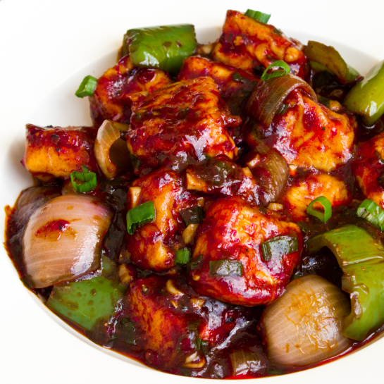

Chili paneer
Paneer (pronounced [pəniːr]), also known as ponir (pronounced [po̯ni̯r]) or Indian cottage cheese, is a fresh acid-set cheese common in the Indian subcontinent (Bangladesh, Bhutan, India, Maldives, Nepal, Pakistan and Sri Lanka) made from cow or buffalo milk.[1] It is a non-aged, non-melting soft cheese made by curdling milk with a fruit- or vegetable-derived acid, such as lemon juice. Its acid-set form (cheese curd) before pressing is called chhena.
prep time
30min.
cook time
15min.
servings
servings
Tags : Soups
Breakfast
Food
Beef
A.1 teaspoon soy sauce and 250 gm paneer
B.2 tablespoon tomato ketchup
C.salt as required
D.1 red bell pepper
E.1/2 cup onion
F.1 dash ginger powder
G.1 capsicum (green pepper)
H.1 teaspoon schezwan sauce
I.2 teaspoon ginger
J.2 teaspoon garlic paste
K.2 green chilli
L.1 teaspoon corn flour
M.1 teaspoon vinegar
N.1/2 cup refined oil
O.1 tablespoon green chilli sauce
P.1 yellow bell pepper
Q.1 teaspoon butter
Step 1-Chop all the veggies in cubed form
To prepare this yummy appetizer recipe, take a chopping board and chop the paneer, onion and bell peppers in small cubes. Wash the cubed bell peppers in running water and keep them aside. Now, peel ginger finely chop it in a small bowl. Then cut the green chillies into strips or you can also slice them in half.
Step 2-Marinate and shallow fry the paneer pieces until golden in colour
Next, add paneer to a small bowl. Add cornflour, salt, ginger powder, vinegar and chilli paste in it. Marinate for 10-15 minutes. Next, put a skillet on medium flame and heat oil in it. When the oil is hot enough, add the cubed paneer pieces in it and fry them till they turn golden in colour. Once done, keep them aside.
Step 3-Saute all the veggies with spices and add fried paneer in it
Now, put a saucepan on medium flame and add a little oil to it. Saute garlic paste, chopped ginger and slit green chillies in it. Add cubed bell peppers in it, saute for a minute then add onions to it. Next, add Schezwan sauce, tomato ketchup, green chilli sauce and soy sauce. Afterwards, add melted butter in it. Stir well and cook for two to three minutes. Finally, add the fried paneer cubes and toss them well.
Step 4-Serve your restaurant-style Chilli Paneer
You can also add some extra water and let the sauce thicken if you want to make a glossy gravy or prepare semi-dry chilli paneer. Garnish with spring onions and enjoy hot. Make sure you try this recipe, rate it and leave a comment in the section below.